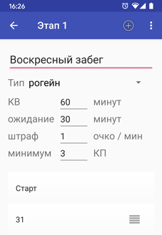

По договоренности с производителем системы SFR для затруднения вандализма дистанций, при первом получении краткосрочной расширенной лицензии требуется подтверждение владения станцией сопряжения (считкой).
В качестве подтверждения подойдет фото станции сопряжения с текстом "SFR Reader" в кадре (пример), отправленное на srgttv@gmail.com.
При запуске SFR Reader предложит включить NFC в телефоне. После этого достаточно приложить чип.
Если приложить тот же чип еще раз, будет выдано сообщение, что такой результат уже прочитан.
SFR Reader позволяет указать, какому участнику (команде) принадлежит прочитанный результат.
В ручном режиме при каждом сканировании чипа программа предлагает ввести имя участника. Для ускорения ввода в SFR Reader можно загрузить список участников из текстового, экселевского (только для базовой и расширенной лицензий) файла, или баз SFR Smart Terminal или SFR Event Centre, и пользователь по первым буквам найдет и выберет нужного. Если загруженный список содержит номера чипов, то участник привяжется автоматически.
Если используются дистанции, то участникам можно указать название дистанции, с которой будет сверяться их результат.
Готовить список удобно в Excel или его аналогах, сохраняя в формате XLSX или CSV.
Образец текстового и xlsx-файла.// Все, что начинается с двух // дробных черт — это комментарий // Формат простой: // одна строка — одна команда, // поля разделены точкой с запятой // Обязательно должно быть название // команды. Перед ним может быть // номер чипа. После — название // дистанции. // Эти команды придется // выбирать из списка Стремительные Ни шагу бегом Медленные и печальные // Эти сами привяжутся // к своим дистанциям Петров;Бегом 4ч Сидорова;Вело 12ч // А тут пограмма сама поймет: // 32-ой чип был у Детей болот, // 36-ой — у Косенкова, // а Малахитам еще и выберет дистанцию 31;Chasing daylight 32;Дети болот 33;Грипузан 34;Петров - лично 35;Сидоров - Ювента 36;Косенков 37;Малахит-1;Бег 38;Малахит-2;Вело
Для загрузки списка нужно перенести файл на телефон (например через почту, мессенджер, USB-провод или Bluetooth), в меню программы выбрать пункт "Загрузить команды..." и найти в телефоне загруженный файл.
После этого SFR Reader напишет, сколько команд удалось загрузить и перейдет к списку команд, или выдаст сообщение об ошибке.
SFR Reader поддерживает создание, редактирование и проверку правильности прохождения дистанций разных типов: заданное направление, выбор, комбинация выбора и заданного направления или рогейн. Переход к редактору дистанции осуществляется через основное меню, или свайпом вправо.
Дистанция состоит из одного или нескольких этапов. Для каждого этапа задается тип (заданное направление, выбор или рогейн), список КП и другие параметры: КВ, минимальное количество КП (этапы типа рогейн и выбор), максимальное опоздание и штраф за опоздание (рогейн).
Комбинированные дистанции создаются из нескольких этапов типа выбор и заданное направление. Этапы типа рогейн сочетать с другими нельзя, потому что на рогейне победитель определяется по очкам, а на выборе и заданном направлении — по времени и количеству КП.
Первый этап может содержать КП "Старт", а последний этап — КП "Финиш", по которым будет определяться полное время прохождения дистанции. Если такие КП заданы, то отметки в чипе до отметки "Старт" и после отметки "Финиш" не будут учитываться при подведении результата. В случае, если такие КП не заданы, стартом будет считаться первое, а финишем — последнее взятое спортсменом КП.
Если у этапа задано минимальное количество КП, то участники, не собравшие на нем нужного числа КП, дисквалифицируются с результатом "Мало КП". КП "Старт" и "Финиш" при подсчете взятых КП не учитываются.
Программа поддерживает загрузку дистанций из текстовых файлов OCAD. Поскольку эти файлы не содержат информацию о типе дистанции, дистанциям присваивается тип "заданное направление".
Многовариантные дистанции, используемые в эстафетах (31 - 32 или 33, или 34 - 35), программа не поддерживает.
Если в SFR Reader задана хотя бы одна дистанция, при считывании чипа SFR Reader попытается привязать его к дистанции, чтобы определить место, занятое участником.
Если SFR Reader смог привязать результат к команде, у команды задана дистанция, и дистанция с таким названием есть в SFR Reader, то будет использоваться она. Во всех остальных случаях будет выбрана дистанция, в которой участник собрал максимальное количество КП. Если таких будет несколько — будет выбрана самая короткая из них.
Привязку результата к дистанции можно всегда изменить вручную.
Дистанция считается пройденной, если пройдены все ее этапы. Этап считается пройденным, если в нем взяты все необходимые КП (для заданного направления — в правильном порядке) и не превышено КВ (для рогейна — не более допустимого опаздания).
Возможные результаты проверки — OK (все этапы пройдены правильно без выхода за КВ) и разные варианты снятий:
Для каждого считанного чипа приводится общий результат: время прохождение дистанции и количество взятых КП (набранных очков), и детализация: списки пропущенных или взятых в неправильном порядке КП, взятые ложные КП, на рогейне и выборе — повторное взятие КП.
При любом изменении дистанции (удалении или добавлении КП, изменении КВ или даже смене типа дистанции) SFR Reader пересчитывает результаты всех считанных чипов.
В некоторых телефонах модуль NFC пишет данные очень медленно (1-2 секунды на ячейку, против нормальных 30-100мс).
Проблеме подвержены:
 @sfr_reader
@sfr_reader
 SFR Reader
SFR Reader{kind=link}